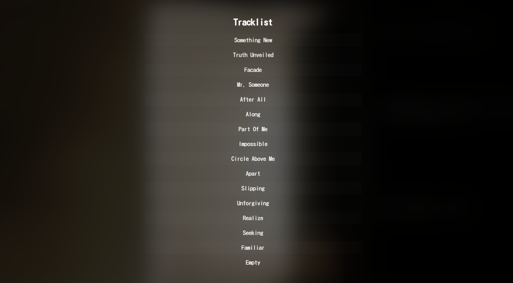

Project Overview
For my album "Something New", I designed and developed a custom landing page that serves as both a promotional tool and a visual extension of my brand identity. The goal was to create a site that seamlessly integrates with the album’s aesthetic, ensuring a cohesive experience across all touchpoints.
- Project Type: Album Landing Page
- Goal: Establish a striking first impression while maintaining brand consistency
- Tools Used: HTML, CSS, JavaScript
- Live Project: Visit the Website
Design Approach
Minimalist UI with Strong Branding
Instead of a traditional, cluttered landing page, I focused on deliberate simplicity—keeping only essential elements while making sure they felt meaningful. Every detail, from typography to animations, was chosen to reinforce the mystique and depth of the album’s identity.
Balancing Desktop & Mobile Experiences
One of the biggest design considerations was ensuring the experience translated well between desktop and mobile.
- The album cover is meant to feel “in front” of everything else, creating depth and immersion.
- On desktop, I achieved this using a 3D hover effect tied to mouse movement.
- On mobile, I replaced this with a gentle, continuous rotation that maintains motion without requiring user interaction.


Development & Technical Considerations
Technologies Used
The project was built using HTML, CSS, and JavaScript. I ensured that all elements remained lightweight and fast-loading, which is critical for an effective landing page.
Navigation & Interactions
- The Corvus Echoes logo in the top-left corner subtly grows on hover, indicating it serves as a button back to the main site.
- The overall layout and structure are intuitive and fluid, ensuring users can quickly access key information without distractions.
Performance & Optimization
While no advanced optimizations were needed, I ensured the page remained low-bandwidth for fast load times, which is critical for first impressions.
Tracklist Presentation
The tracklist needed to be presented in a way that felt interactive while maintaining a clean, atmospheric aesthetic. I opted for a subtle alternating background effect that subtly animates on mouse hover to visually separate each song.
Embedded Media
To create a truly immersive landing page, I incorporated my 3D-Animated music video as an embedded video directly onto the site. This allows users to immediately engage with the album’s visual and auditory elements.
Final Thoughts & Reflection
What I Learned
- How to translate a brand identity into an interactive digital space.
- How to optimize motion design for both desktop and mobile users.
- How a minimalist UI can still be highly engaging and immersive.
What’s Next?
If I were to expand this project, I’d love to introduce more interactive elements—allowing users to engage with the album in new, unique ways. Whether through audio-reactive visuals, interactive storytelling, or experimental motion graphics, there are endless possibilities for taking this experience even further.